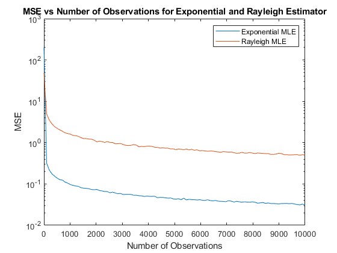
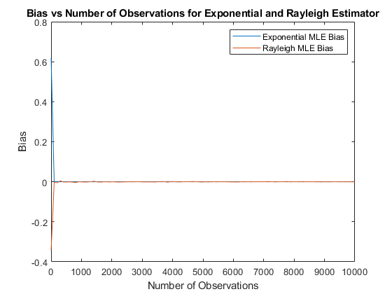
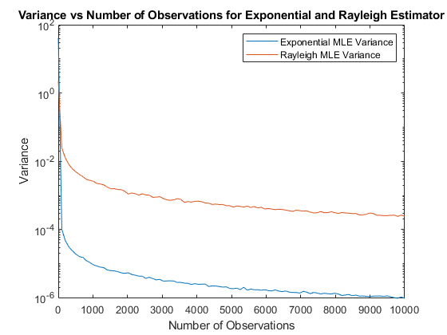

Contents
%Project 3 %Do Hyung (Dave), Brian, Minh
P2
To find the Maximum Likelihood Estimates for the Exponential and Rayleigh distributions, we first derived the estimates in part 1. Then to get the data for plotting the relationship between number of observations and MSE/bias/variance, we generated n_trials for each number of observations. This meant we calculated the maximum likelihood parameters for each number of observations and took the average amongst n_trials. In our code lambda is the parameter that maximizes likelihood. Finally, we calculated the bias, MSE, and variance for each number of observations and plotted them.
clc; close all; clear all; % Observation vector to vary the number of observations per trial N_obs = round(linspace(1, 1e4, 100)); % Number of different number of observations sz = [N_obs(end), 1]; % Mean for Exponential Distribution mu = 10; % Variance for Rayleigh Distribution variance = 10; % Number of trials n_trial = 1000; % Preallocating the matrices for recording MSES of the Exponential % and Rayleigh distributions. mses_exp = zeros(size(N_obs,2), n_trial); mses_ray = zeros(size(N_obs,2), n_trial); % Parameters to Maximize Likelihood for each distribution lambda_exp = 1/mu; lambda_ray = sqrt(variance); % Start Trials, outer loop is for changing number of observations for i = 1:size(N_obs,2) % Inner loop is for different trials per number of observations for j = 1:n_trial % Generate distributions for Exponential and Rayleigh X_exp = exprnd(mu, N_obs(i), 1); X_ray = raylrnd(sqrt(variance), N_obs(i), 1); % for an exponential distribution, a lambda for the mle estimator would % simply be the reciprocal of sample mean mses_exp(i, j) = 1/mean(X_exp); % Derived formula for Rayleigh Distribution lambda mses_ray(i, j) = sqrt(sum(X_ray.*X_ray)/(2*N_obs(i))); end end % Calculating the biases for each distribution bias_exp = mean(mses_exp, 2) - lambda_exp; bias_ray = mean(mses_ray, 2) - lambda_ray; % Calculating the variances for each distribution var_exp = var(mses_exp, 0, 2); var_ray = var(mses_ray, 0, 2); % Calculates the MSE for each distribution % Uses L2 norm to find mean squared error per number of observations mses_exp = vecnorm(mses_exp-lambda_exp, 2, 2); mses_ray = vecnorm(mses_ray-lambda_ray, 2, 2);
MSE vs Number of Observations Plot
Plotting MSE vs Number of Observations on a semilog y scale, so that you can clearly see the relationship (otherwise it would look like it just collapsed to 0)
figure; semilogy(N_obs, mses_exp); hold on; semilogy(N_obs, mses_ray); title('MSE vs Number of Observations for Exponential and Rayleigh Estimator'); legend('Exponential MLE', 'Rayleigh MLE'); xlabel('Number of Observations'); ylabel('MSE');
Bias vs Number of Observations Plot
No semilog y was needed here
figure; plot(N_obs, bias_exp); hold on; plot(N_obs, bias_ray); title('Bias vs Number of Observations for Exponential and Rayleigh Estimator'); legend('Exponential MLE Bias', 'Rayleigh MLE Bias'); xlabel('Number of Observations'); ylabel('Bias');
Variance vs Number of Observations Plot
figure; semilogy(N_obs, var_exp); hold on; semilogy(N_obs, var_ray); title('Variance vs Number of Observations for Exponential and Rayleigh Estimator'); legend('Exponential MLE Variance', 'Rayleigh MLE Variance'); xlabel('Number of Observations'); ylabel('Variance');
P3
Our rationale for figuring out the distribution that best matches the data from the data.mat file is the one whose maximum likelihood is the highest. So we found the log-likelihood estimates for each distribution and compared them. We found that the data matched a Rayleigh distribution better than an Exponential Distribution.
clc; close all; clear all; % Load data from .mat file X = load('data.mat').data; X_size = size(X,2); % Calculating the ML parameters for each distribution using derived % formulas lambda_exp = 1/mean(X); lambda_ray = sqrt(sum(X.*X)/(2*X_size)); % Calculating the log-likelihood estimates for each distribution l_exp = sum(log(lambda_exp*exp(-lambda_exp*X))) l_ray = sum(log(X/(lambda_ray*lambda_ray).*exp(-(X.*X)/(2*lambda_ray*lambda_ray)))) % Since likelihood estimate of Rayleigh MLE is higher than that of % Exponential MLE, the data is more likely to be drawn from a Rayleigh % Distribution.
Error: Functions cannot be indexed using {} or . indexing.
Error in mle_proj (line 118)
X = load('data.mat').data;